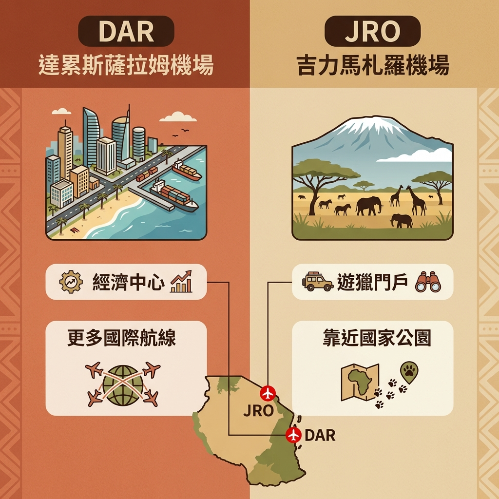
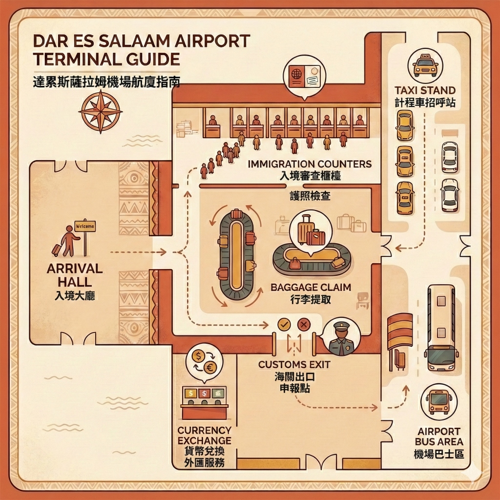
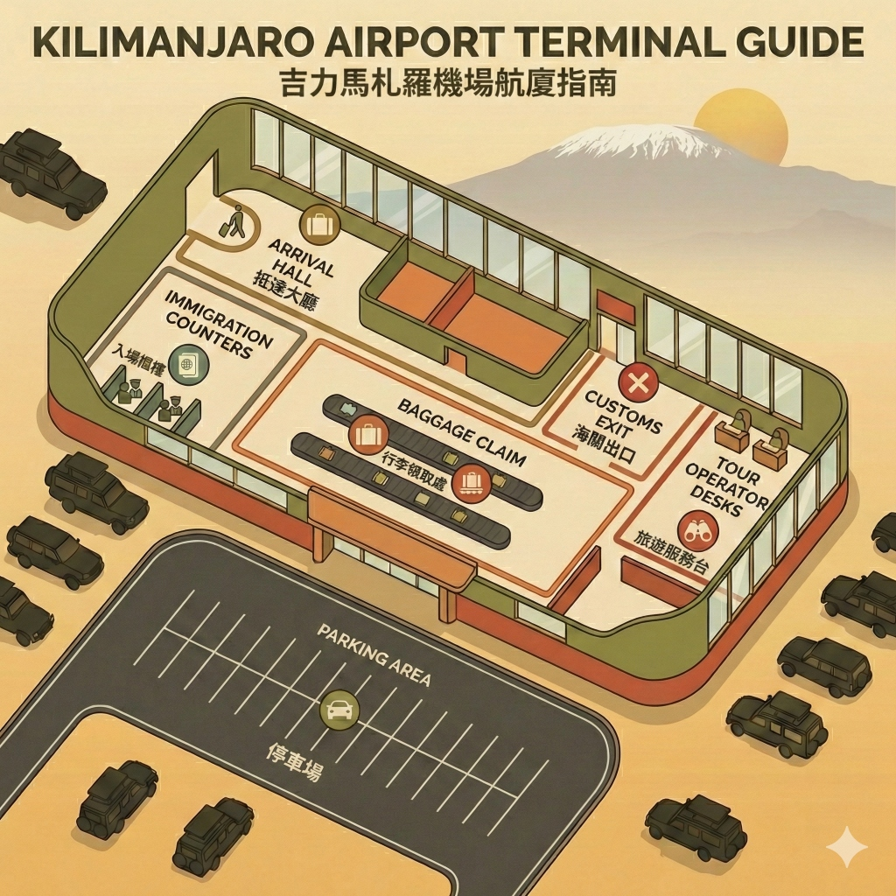
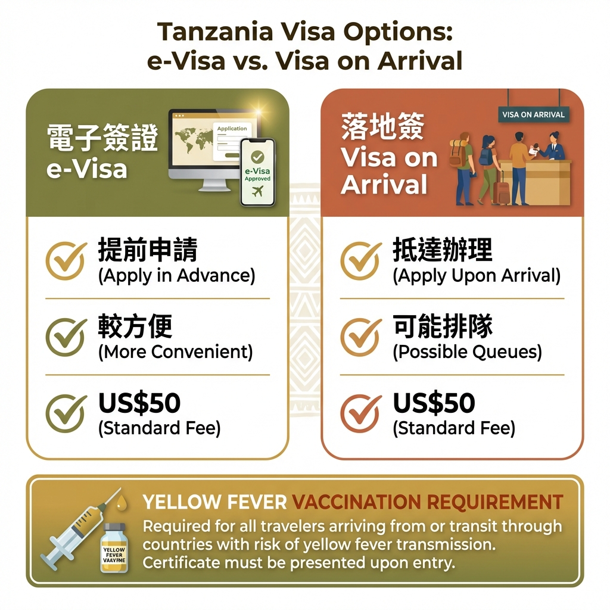

為什麼要了解坦尚尼亞機場資訊？
選擇正確的機場不僅影響票價,更決定了你抵達後的交通便利性與旅程效率。坦尚尼亞有兩大國際機場,各有特色,了解它們的差異是規劃行程的第一步。
坦尚尼亞是東非最熱門的遊獵目的地,每年吸引數十萬遊客前來追尋野生動物的蹤跡。但許多初次造訪的旅客,卻在機場選擇、航班安排、入境流程上感到困惑。
了解機場資訊的三大好處:
- 節省時間與金錢: 選對機場可大幅減少陸路交通時間與費用
- 避免入境麻煩: 提前準備文件,通關更順暢
- 安排更彈性: 了解航班選項,規劃最適合的路線

坦尚尼亞兩大國際機場:
- 達累斯薩拉姆機場 (DAR): 位於經濟中心達累斯薩拉姆,國際航班最多,適合轉機或結合海灘行程
- 吉力馬札羅機場 (JRO): 靠近遊獵重鎮阿魯沙,直達北部國家公園最便捷
達累斯薩拉姆機場 (DAR) 完整指南
Julius Nyerere International Airport (朱利葉斯·尼雷爾國際機場) 是坦尚尼亞最大、最繁忙的國際機場,也是大多數國際航班的首選降落點。
✈️ 機場概況
機場代碼: DAR
位置: 達累斯薩拉姆市區西南方約 13 公里
航廈: 3 個航廈 (T1 為國際線主要航廈,T2 為區域航線,T3 為國內線)
年旅客量: 約 600 萬人次
首都小知識:
許多人以為達累斯薩拉姆是坦尚尼亞的首都,但其實官方首都在 1996 年已遷至多多馬 (Dodoma)。
不過,達累斯薩拉姆仍然是坦尚尼亞最大的城市與經濟、文化、交通中心。
幾乎所有政府機關、大使館、企業總部都還在達累斯薩拉姆,國際航班也集中在這裡。
所以對旅客而言,DAR 機場依然是進出坦尚尼亞的主要門戶。
多多馬雖是官方首都,但目前沒有國際機場,旅遊重要性較低。
🌍 主要航空公司與航線
DAR 擁有最多的國際直飛航線選擇:
| 出發城市 | 航空公司 | 飛行時間 |
|---|---|---|
| 杜拜 (DXB) | 阿聯酋航空 Emirates | 約 5 小時 |
| 多哈 (DOH) | 卡達航空 Qatar Airways | 約 5.5 小時 |
| 伊斯坦堡 (IST) | 土耳其航空 Turkish Airlines | 約 7 小時 |
| 阿姆斯特丹 (AMS) | 荷蘭皇家航空 KLM | 約 9 小時 |
| 內羅畢 (NBO) | 肯亞航空 Kenya Airways | 約 1.5 小時 |
🛂 入境流程詳解
抵達 DAR 後,按照以下步驟完成入境:
- 下機: 跟隨 "Arrivals" 指示牌前往入境大廳
- 簽證辦理: 若持落地簽,先至簽證櫃檯辦理;若已有電子簽,直接前往入境查驗
- 入境查驗: 出示護照、簽證、黃熱病疫苗證明 (若適用)、回程機票
- 行李提領: 至指定轉盤提取行李
- 海關檢查: 通過綠色通道 (無申報) 或紅色通道 (有申報)
- 出境: 進入接機大廳

入境時間估算:
• 持電子簽且無托運行李: 30-45 分鐘
• 持電子簽有托運行李: 45-60 分鐘
• 現場辦落地簽: 1-2 小時 (視排隊人數而定)
小提示: 尖峰時段 (下午至晚上) 入境人潮較多,建議預留充足時間。
🔄 轉機至吉力馬札羅/阿魯沙
如果你的最終目的地是北部國家公園,可能需要從 DAR 轉機至 JRO 或直接搭車前往阿魯沙:
- 國內航班: Precision Air, Coastal Aviation, Auric Air 等營運 DAR-JRO 航線,飛行時間約 1.5 小時,票價 $100-200 美金
- 陸路交通: DAR 至阿魯沙車程約 8-10 小時,較不建議 (路況差且疲勞)
🚖 機場交通與設施
| 交通方式 | 費用 | 車程 |
|---|---|---|
| 機場計程車 | $25-35 美金至市區 | 20-40 分鐘 |
| Uber / Bolt | $15-25 美金至市區 | 20-40 分鐘 |
| 機場巴士 (Dar Express) | 約 $5-10 美金 | 30-60 分鐘 |
機場設施:
- ✅ 免費 WiFi (限時 30 分鐘)
- ✅ 貨幣兌換櫃檯與 ATM
- ✅ 餐廳、咖啡廳、商店
- ✅ 行李寄存服務
- ✅ SIM 卡販售櫃檯 (Vodacom, Airtel)
吉力馬札羅機場 (JRO) 完整指南
Kilimanjaro International Airport 是前往坦尚尼亞北部遊獵的最佳門戶,距離塞倫蓋提、恩戈羅恩戈羅等知名國家公園更近。
✈️ 機場概況
機場代碼: JRO
位置: 位於吉力馬札羅山與梅魯山之間,距阿魯沙市區約 50 公里
航廈: 單一航廈 (規模較小但設施齊全)
年旅客量: 約 100 萬人次
🌍 主要航空公司與航線
JRO 的國際航班較少,但對遊獵客而言極為便利:
| 出發城市 | 航空公司 | 備註 |
|---|---|---|
| 阿姆斯特丹 (AMS) | 荷蘭皇家航空 KLM | 每週 3-4 班,旺季增班 |
| 伊斯坦堡 (IST) | 土耳其航空 Turkish Airlines | 每週數班 |
| 內羅畢 (NBO) | 肯亞航空 Kenya Airways | 多班次,常用轉機點 |
| 尚吉巴 (ZNZ) | 多家航空,含 Precision Air | 遊獵後海灘度假首選 |
JRO 的優勢:
- 省時: 抵達後 1-2 小時即可到達阿魯沙,當天可開始遊獵
- 省錢: 無需額外國內段機票或長途陸路交通
- 體驗佳: 機場規模小,入境快速,服務更個人化
🛂 入境流程
JRO 入境流程與 DAR 類似,但因旅客較少,通常更快速:
- 簽證辦理: 落地簽櫃檯通常人較少,辦理較快
- 入境時間: 平均 20-45 分鐘 (持電子簽更快)
- 行李提領: 只有一個轉盤,很快就能拿到行李

到達後接駁:
大多數遊獵公司會在 JRO 提供免費或付費接送服務。
一出海關,你的導遊通常已舉著名牌在等候,會直接帶你前往阿魯沙或直接開始遊獵之旅！
這種無縫接軌的體驗,正是選擇 JRO 的最大魅力。
🚗 前往國家公園
從 JRO 前往主要遊獵目的地的車程:
- 阿魯沙市區: 約 1 小時車程
- 阿魯沙國家公園: 約 1.5 小時車程
- 塔蘭吉雷國家公園: 約 2-3 小時車程
- 曼雅拉湖國家公園: 約 2.5 小時車程
- 恩戈羅恩戈羅火山口: 約 3.5-4 小時車程
- 塞倫蓋提國家公園: 約 5-6 小時車程
🏨 機場設施與服務
JRO 雖然規模較小,但基本設施完善:
- ✅ 免費 WiFi
- ✅ 貨幣兌換與 ATM
- ✅ 簡餐餐廳與咖啡廳
- ✅ 紀念品商店
- ✅ SIM 卡販售
- ✅ 遊獵公司櫃檯
國際機票購買攻略
掌握訂票技巧,能讓你省下可觀的旅費。以下是購買坦尚尼亞機票的實用建議。
📅 最佳訂票時機
提前訂票: 建議至少提前 3-6 個月預訂,特別是旺季 (6-10月、12-2月)
- 最便宜: 淡季 (3-5月、11月),票價可便宜 20-30%
- 最貴: 暑假 (7-8月)、聖誕新年 (12月底-1月初)
- 甜蜜點: 出發前 2-3 個月通常有較好的價格
✈️ 推薦航空公司與航線
從台灣/香港前往坦尚尼亞,主要透過以下轉機點:
| 轉機點 | 航空公司 | 優缺點 |
|---|---|---|
| 杜拜 (DXB) | 阿聯酋航空 | ✅ 航班多(含JRO)、銜接佳 ❌ 價格較高 |
| 多哈 (DOH) | 卡達航空 | ✅ 航班多(含JRO)、服務好、機場舒適 ❌ 轉機時間較長 |
| 伊斯坦堡 (IST) | 土耳其航空 | ✅ 價格實惠、航點多 ✅ 推薦! |
| 內羅畢 (NBO) | 肯亞航空 | ✅ 可順遊肯亞 ❌ 需辦肯亞簽證 |
| 阿姆斯特丹 (AMS) | 荷蘭皇家航空 KLM | ✅ 直飛 JRO ✅ 適合純遊獵 |
💰 票價參考 (經濟艙來回)
- 台北/香港 → DAR: NT$ 35,000 - 60,000 (視季節與航空公司)
- 台北/香港 → JRO: NT$ 40,000 - 65,000
- DAR → JRO (國內段): US$ 100 - 200
訂票小技巧:
• 使用 Skyscanner, Google Flights 比價
• 留意航空公司促銷 (土耳其航空常有優惠)
• 考慮開口票 (Open Jaw): 如台北→JRO, DAR→台北,避免走回頭路
• 行李限額: 通常 23kg x 2,遊獵行李偏多,務必確認
• 預訂時確認機場,避免訂錯 DAR/JRO!
🎯 DAR vs JRO:我該選哪個？
| 行程類型 | 建議機場 | 原因 |
|---|---|---|
| 純北部遊獵 | JRO | 最近阿魯沙,無需額外轉機 |
| 遊獵 + 尚吉巴海灘 | JRO 進, DAR 出 | 順路不走回頭路 |
| 南部國家公園 (Selous, Ruaha) | DAR | 距離較近,方便轉機 |
| 航班選擇多樣性 | DAR | 國際航班最多,時間彈性大 |
入境與簽證實用資訊
準備好所有必要文件,讓入境流程更順暢。以下是你需要知道的簽證與入境資訊。
🛂 簽證申請方式
台灣護照持有者前往坦尚尼亞需要簽證。有兩種申請方式:

1️⃣ 電子簽證 (e-Visa)
2️⃣ 落地簽證 (Visa on Arrival)
⚠️ 重要提醒:
- 建議使用電子簽證,可大幅縮短入境時間
- 落地簽只接受美金現金,且鈔票須為 2006 年後發行
- 請攜帶列印版電子簽證確認函 (以防網路問題)
電子簽證
依照我們的經驗，電子簽證審核時間平均落在10個工作天左右，甚至有遇過申請後兩周才核發。
強烈建議提早申請，以免耽誤行程。
申請電子簽證時，國家列表中並沒有台灣，台灣人如果要申請，只能選擇China。
📄 入境必備文件
通關時,請準備以下文件:
- ✅ 護照: 有效期至少 6 個月以上
- ✅ 簽證: 電子簽列印本或落地簽申請表
- ✅ 回程機票: 電子機票證明
- ✅ 住宿證明: 飯店或營地預訂確認 (偶爾會被要求)
- ✅ 黃熱病疫苗證明: 若從疫區國家入境 (詳見下方)
💉 黃熱病疫苗要求
坦尚尼亞並非黃熱病疫區,但有以下規定:
- 從疫區國家入境: 必須出示黃熱病疫苗接種證明 (黃皮書)
- 從台灣直飛或經非疫區轉機: 通常不需要
- 前往尚吉巴: 可能被要求出示證明
實用建議:
雖然不一定需要,但建議還是施打黃熱病疫苗並攜帶證明。
原因:
• 入境官員判定標準不一,有備無患
• 若要前往尚吉巴,幾乎必查
• 疫苗終身有效,未來前往其他非洲國家也有用
• 在台灣可至旅遊醫學門診接種 (約 NT$ 1,500-2,000)
🚫 海關規定與禁止攜帶物品
可攜帶
- 個人用品與合理數量的衣物
- 攝影器材 (相機、鏡頭、空拍機需申報)
- 酒類：最多 1 公升
- 香菸：最多 200 支
禁止攜帶
- 塑膠袋 (全面禁用，入境會沒收)
- 毒品、武器
- 超過 $10,000 美金現金 (需申報)
- 野生動物製品 (象牙、犀牛角等)
關於空拍機
非洲國家對於空拍機的規定十分嚴格，坦尚尼亞也不例外。
不僅需要申請進口許可證(Import
Permit)，如果要在國家公園拍攝，還需要獲得TANAPA（國家公園管理局）及國防部的額外特許。
如果你只是去一般的 Safari 旅遊，不建議攜帶，申請過程的繁瑣與費用可能會超過預期。
常見問題 Q&A
整理旅客最常詢問的機場與航班相關問題,讓你做好萬全準備。
Q: DAR 和 JRO,我應該選哪個機場？
A:
如果你的行程以北部遊獵(塞倫蓋提、恩戈羅恩戈羅、塔蘭吉雷)為主,強烈推薦JRO。
如果要去南部國家公園或尚吉巴島,選擇 DAR 較便利。
最理想的方式是開口票: JRO 進,DAR 出 (或反之),順路不走回頭路。
Q: 需要提前多久到機場？
A:
國際航班: 建議提前 3 小時抵達機場
國內航班: 提前 1.5-2 小時即可
兩座機場規模都不大,安檢速度尚可,但旺季人潮較多,預留充足時間較保險。
Q: 行李限額是多少？
A:
國際航班: 通常為托運 23kg x 2 件 + 手提 7kg
國內航班: 限制較嚴,通常 15kg (軟殼行李),超重需額外付費
小型飛機 (Fly-in Safari): 限重 15kg,必須使用軟殼行李袋,不可用硬殼行李箱
Q: 機場有免費 WiFi 嗎？
A:
DAR: 有免費 WiFi,但限時 30 分鐘,速度普通
JRO: 有免費 WiFi,速度尚可
建議抵達後直接在機場購買當地 SIM 卡 (Vodacom 或 Airtel),約 $5-10 美金含流量,訊號穩定。
Q: 可以在機場換匯嗎？匯率好嗎？
A:
兩個機場都有外幣兌換櫃檯與 ATM。
機場匯率通常較差,建議只換少量應急 (如付計程車費)。
最佳方式: 攜帶美金,大部分遊獵費用、飯店都收美金。若需坦尚尼亞先令,到市區銀行或 ATM 提領較划算。
Q: 轉機時間需要多久才安全？
A:
國際轉國際: 建議至少 2-3 小時
國際轉國內: 建議至少 3-4 小時 (需提領行李、重新 check-in)
若班機延誤風險高 (如雨季),預留更長時間較保險。
Q: 機場有過夜設施嗎？
A:
兩座機場內沒有過夜休息室或膠囊旅館。
如需過夜,建議預訂機場附近飯店:
• DAR: Protea Hotel by Marriott (步行可達)
• JRO: KIA Lodge, Sable House (車程 5-10 分鐘)
結語
機場,是夢想啟航的地方,
也是回憶收藏的起點。
當你踏出吉力馬札羅機場,眼前是非洲的藍天與遠方的雪山,
準備好你的護照與簽證,非洲的大地正在呼喚你。
準備好展開你的坦尚尼亞之旅了嗎？
真正的冒險在草原上等著你
讓我們協助你規劃從機票到遊獵的完整行程,
從降落那刻起,就開始你的非洲夢想!